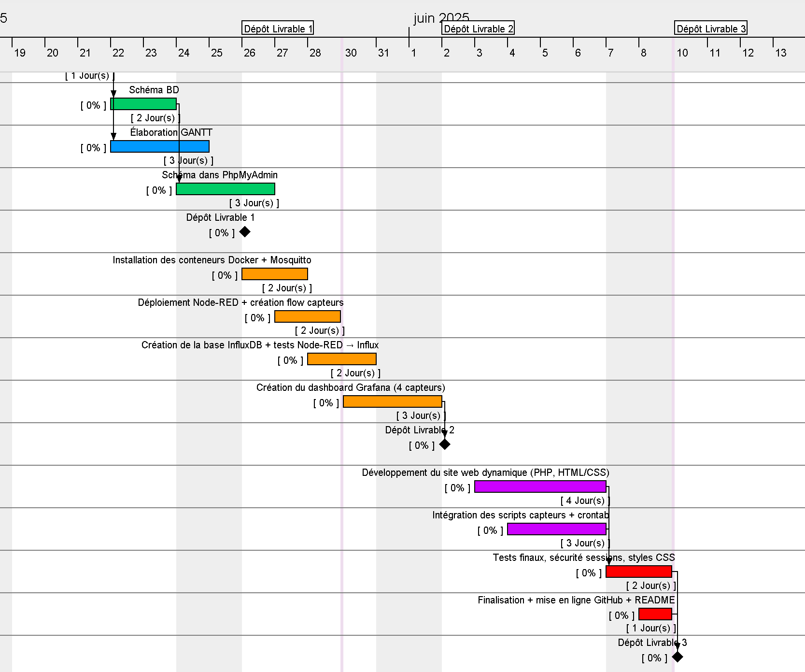
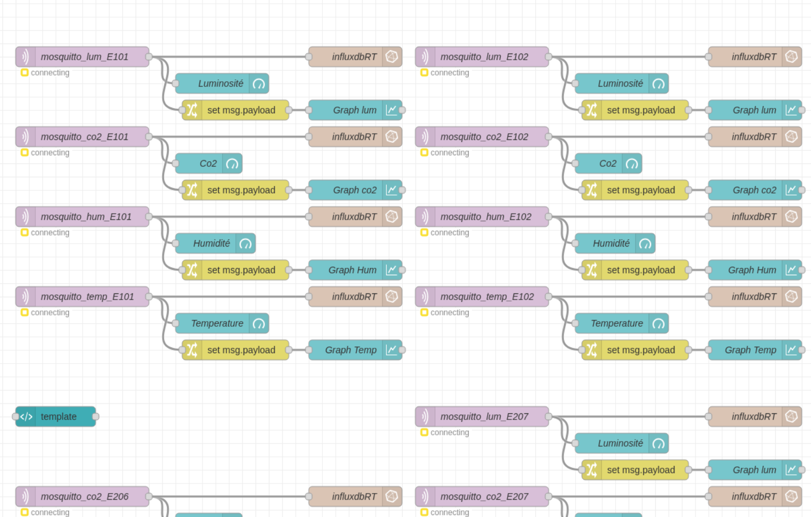
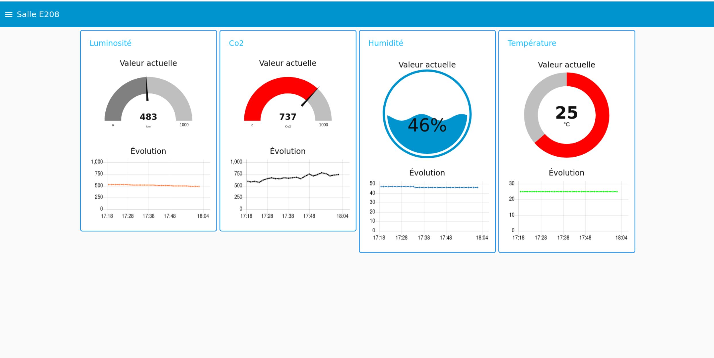
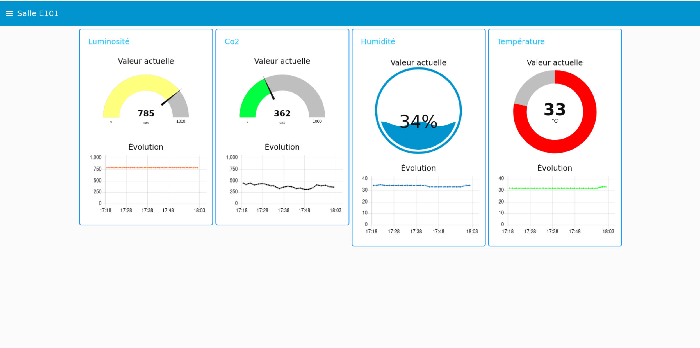
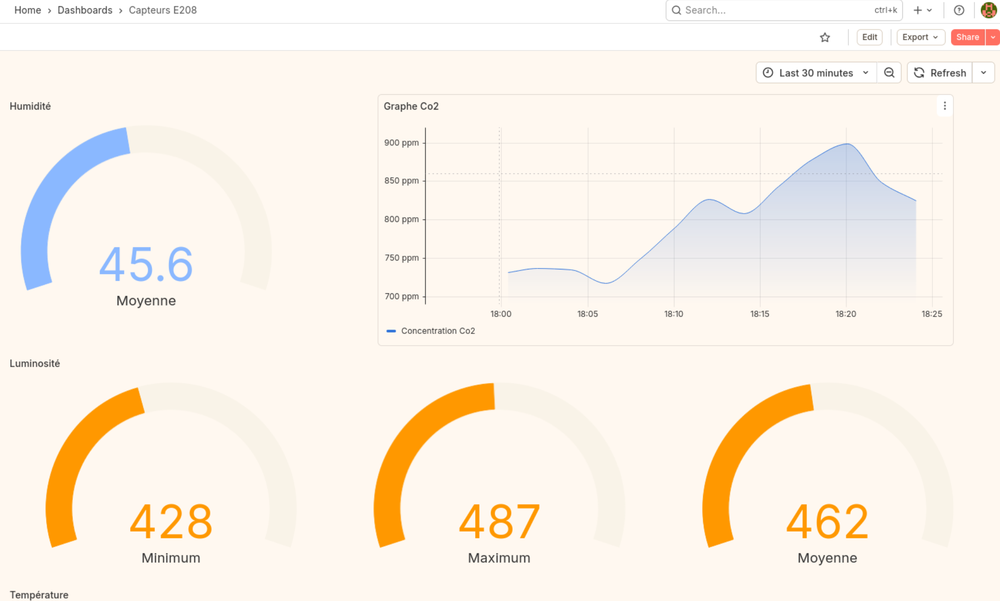

Voici le plan et le partage des différentes tâches sur les diverses séances en autonomie et avec l’enseignant.
Cependant, le diagramme à été réalisé pendant la première séance. C'est pourquoi, les tâches n'ont pas d'avancement.
Pour ce livrable nous avons déployé des nœuds connectés ensembles et configurés sur les éléments essentiels afin d’afficher les données récupérées sur une interface graphique.
Ce flux Node-RED a été conçu pour acquérir, enregistrer et afficher différents types de données en provenance de capteurs variés. Chaque capteur transmet ses mesures via le protocole MQTT, et ces messages sont directement capturés par Node-RED. Les données ainsi reçues sont automatiquement sauvegardées dans la base InfluxDB (nommée influxdbRT), permettant leur conservation historique et une analyse approfondie par la suite. L’interface, réservée uniquement à l’administrateur, donne accès à l’ensemble des données issues de tous les capteurs. Par exemple, voici l'affichage des relevés pour la salle E208 :
Ainsi, par une interface que uniquement l'administrateur ne peut accéder, on peut y voir toutes les données de tous les capteurs. Comme affiché ci-dessous pour la salle E208 :
Et de la salle E101 :
Depuis Grafana, nous avons importé la base de données InfluxDB que l’on a nommée influxdb-sae23. Ci-dessous, l’exemple de sélection pour afficher le dashboard concernant la luminosité de la salle E208 dans le bâtiment RT.
Le lien vers le dépot github contenant les fichiers du site internet est disponible sous cette adresse : https://github.com/billuky/Sae23